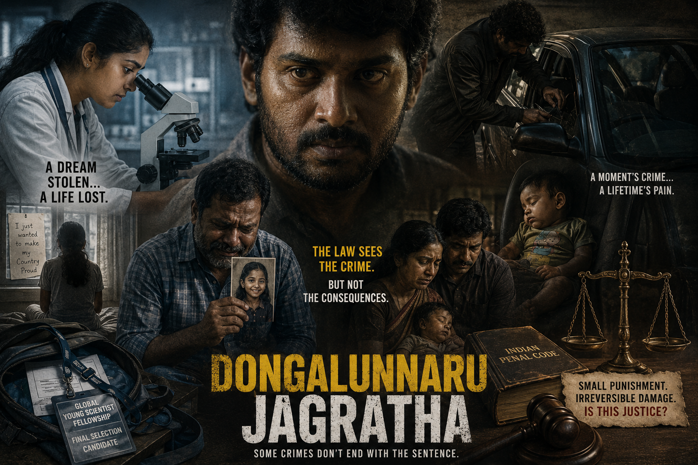

നിയമം

ഡൊങ്കലുന്നരു ജാഗ്രത ഒരു തെലുങ്ക് സിനിമ, സതീഷ് തൃപുര സംവിധാനം ചെയ്തത് കണ്ടു. സിനിമയെപ്പറ്റിയല്ല അതിൻ്റെ തീം നെപ്പറ്റി പറയാതിരിക്കാൻ വയ്യ.
നമ്മുടെ ക്രിമിനൽ നിയമത്തെപ്പറ്റിയും അത് എത്ര നിസ്സാരമായാണ് ഓരോന്നിനേയും കാണുന്നതെന്നും പലപ്പോഴും തോന്നിയിട്ടുണ്ടെങ്കിലും, അതിൻ്റെ ഭവിഷത്തിനെപ്പറ്റി നിയമനിർമ്മാതാക്കൾ ഒരിക്കലും ചിന്തിച്ചിട്ടുണ്ടാകുകയില്ല.
ഒരു ചെറിയ കളവിന്ന് നൽകാകുന്ന ചെറിയൊരു കാലത്തേക്കുള്ള തടവുശിക്ഷയാണ്. പക്ഷെ ആ കളവ് കൊണ്ട് അത് നഷ്ടപെട്ടവൻ്റെ പ്രശ്നങ്ങൾ പലപ്പോഴും നിസ്സാരമായിട്ടായിരിക്കും കാണുക. വാഹനങ്ങളിൽ നിന്ന് ലാപ്ടാപ്പ്, ബേഗുകൾ, സ്റ്റീരിയോ സെറ്റുകൾ മോഷ്ടിക്കുന്ന ഒരു കള്ളനെപ്പറ്റിയാണ് സിനിമ .
മകളെ നഷ്ടപ്പെട്ട അച്ഛൻ്റെയും, പിഞ്ചു കുഞ്ഞിൻ്റെ മരണം കൊണ്ട് ദു:ഖിക്കുന്ന മാതാപിതാക്കളേയും അതിൻ്റെതായ ഗൗരവത്തിൽ എടുക്കാതെ അതിനു കാരണക്കാരനായ കള്ളനെ ഒരു ചെറിയ കളവ് കേസിലെ പ്രതിയാക്കി ചുരുങ്ങിയ കാലത്തേക്ക് ശിക്ഷിക്കുക, അല്ലെങ്കിൽ ഒരു പെററി കേസിൽ ഉൾപ്പെടുത്തുക എന്നതാണ് നിയമ വ്യവസ്ഥിതിയിൽ ചെയ്യാവുന്നത്.
ഈ സിനിമയിൽ ഒരു ശാസ്ത്രജ്ഞയാവുക എന്ന ലക്ഷ്യത്തോടെ പഠിച്ച്, എല്ലാ രാജ്യങ്ങളിൽ നിന്നും നടത്തിയ തിരഞ്ഞെടുപ്പിൽ തിരഞ്ഞെടുത്ത 9പേരിൽ ഒരാളായ പെൺകുട്ടി അതിനായി പോകുമ്പോഴാണ് അവളുടെ രേഖകൾ എല്ലാം അടങ്ങിയ ബേഗ് ഒരു കള്ളൻ മോഷ്ടിക്കുന്നത് .അതോടെ അവൾക്ക് പോകാൻ പറ്റാതാവുകയും, അവസരം നഷ്ടപ്പെടുകയും ഉണ്ടായി. അതിൻ്റെ വിഷമം കാരണം അവൾ ആത്മഹത്യ ചെയ്ത വിഷമമാണ് അച്ഛൻ്റത്.
മറ്റൊന്നു കാറിൽ മോഷണം നടത്തുമ്പോൾ അതിൻ്റെ A/C യുടെ വയർ മുറിച്ചപ്പോൾ ആ കാറിനകത്തിരുന്ന ഒരു പിഞ്ചു കുഞ്ഞിൻ്റെ മരണം.
ഇതിനെല്ലാം കിട്ടാവുന്നത് ചെറിയ ശിക്ഷ.
പല നിയമങ്ങളും മാറ്റി എഴുതേണ്ട കാലം കഴിഞ്ഞു. തെളിവ് നിയമത്തിൻ്റെ പോരായ്മ മധു കൊലക്കേസിൽ കണ്ടില്ലേ.
നിയമനിർമ്മാതക്കളുടെ കണ്ണു തുറപ്പിക്കുന്ന നല്ല ഒരു സിനിമ.